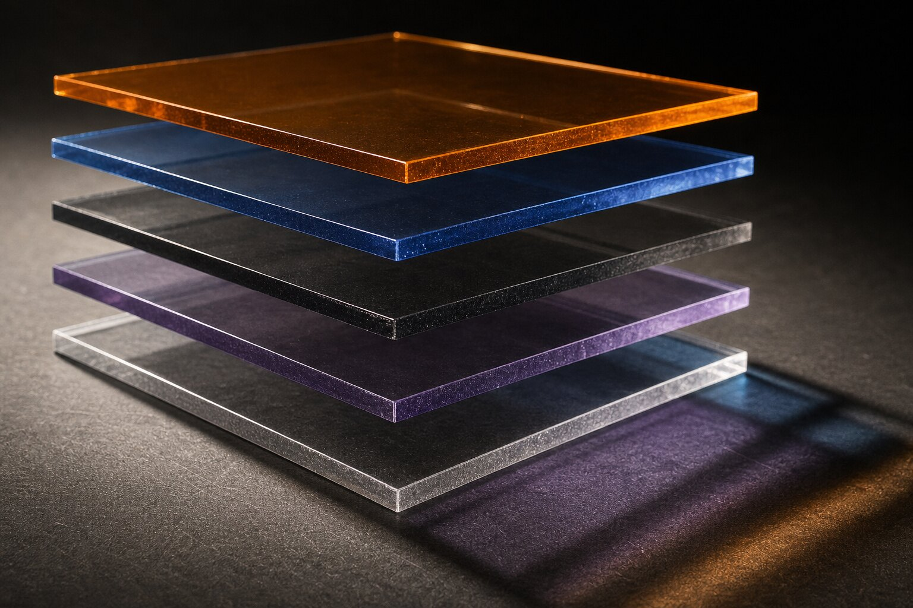

What should an AI renderer comparison test besides image quality?
Test what the tool exports after generation. A production-ready renderer should disclose resolution and bit depth, preserve transparency where promised, and provide usable masks, depth or component passes when the workflow needs them. Those files determine whether a designer can correct one surface without generating the whole scene again.
This week's sweep produced the familiar parade of “best AI rendering tools” lists. The tables compare speed, price, host application and the broadest imaginable idea of quality. Then comes a row of polished villas, each lit like an expensive olive-oil advert.
The missing question is dull enough to matter: what can you download?
A flattened eight-bit image is a finished opinion. If the planting spills across a mullion, the sky clips or the client asks for one stone panel to warm up, the correction may require a fresh generation. The original winner becomes an energetic intern who misplaced the working file.
Why is a JPEG a weak production handoff?
JPEG is useful for review and delivery. It is a poor record of how an image was assembled. There is no alpha channel, no object identity, no scene depth and little room for strong tonal moves after compression. A PNG can preserve transparency and lossless pixels, but it still does not separate glass from planting or direct light from reflection.
Traditional renderers set a higher baseline. Chaos documents V-Ray render elements for diffuse color, reflection, shadow, object IDs, normals, Z-depth and many other components. Its listed EXR channels support 16-bit or 32-bit floating-point data where appropriate. That is not ornamental technicality. It is permission to make a precise correction late.
An AI image tool may have no equivalent scene data. Fair enough. It should then be judged as an image generator, not waved through as a replacement for the renderer that produced the controlled source.
Which output files should comparison tables name?
| Output | Question it answers | Failure it prevents |
|---|---|---|
| Full-resolution image | What are the native dimensions and bit depth? | Upscaling disguised as native detail |
| Alpha | Can the subject be composited cleanly? | Hours cutting foliage, glass and hair |
| Object or material mask | Can one region be selected again? | Regenerating the building to change one finish |
| Depth or normals | Can later effects follow scene geometry? | Fog, focus and relighting that ignore form |
| Lighting or reflection passes | Can tone be adjusted by contribution? | Painting over a physically coherent base |
| Metadata and settings | Can the result be traced or repeated? | A mystery image with no useful audit trail |
Not every project needs every row. A sketch-stage mood image may need only a good PNG and a settings record. A competition composite with foreground trees needs alpha. A client-approved camera moving toward final production needs masks and renderer-native passes. Comparison writers should state the intended stage, then test the matching output.

Can AI masks replace renderer IDs?
Sometimes, for a bounded edit. They are not the same artifact.
A renderer's Object ID is assigned from scene information. Chaos says its V-Ray Object ID element can store integer IDs in EXR or V-Ray Image Format files. A semantic AI selection is inferred from visible pixels. It may merge two chairs because they look alike, split one glazed wall at a reflection, or miss a plant against a similar hedge.
That does not make semantic selection useless. Veras's background removal, for example, can produce a fast cutout worth checking. Our alpha audit for Veras treats glass, fine planting, contact shadows and halos as the hard cases. The point is provenance. A scene ID records authorship from the model; an inferred mask makes a visual guess after the fact.
How should an output test be run?
Use one source view with a glazed edge, fine planting, repeated material and deep foreground-to-background range. Generate according to the vendor's documented route. Download every available file without repairing it first.
Open the alpha over black and white. Push the exposure on any high-bit-depth file. Isolate the mask boundaries at 200 percent. Use depth to drive a deliberately obvious fog or focus effect. The test is not whether those edits look tasteful. It is whether the data behaves consistently enough to edit.
Record the native pixel dimensions, file type, bit depth, embedded profile, available channels and any paid tier required for export. Our pricing-unit audit explains why a cheap headline plan can become expensive once resolution, credits and retries are normalized. Output restrictions belong in that same cost calculation.
Why does bit depth deserve a row?
Architectural images contain bright windows, dark interiors and quiet gradients that punish thin files. Eight-bit delivery can be perfectly adequate once the image is finished. It is brittle when exposure and color are still moving.
Chaos's V-Ray documentation distinguishes display data from raw and file data, and lists half-float and full-float pixel formats in its render-element API. The exact implementation varies by host, but the principle travels: preserve more tonal information while decisions remain open; compress when the decision is closed.
A comparison should not award points merely because “EXR” appears in a feature list. Open the file. Confirm the promised channels exist, identify their precision and check whether display corrections were baked into data passes. A badge is not a pipeline.
Does the output survive another application?
A file is useful only if the next person can open it without recreating the vendor's environment. Test the export in the actual destination: Photoshop, Affinity Photo, Nuke, After Effects or the studio's review system. Channel names should remain legible. Alpha should stay straight or premultiplied in a documented way. Depth should retain enough precision to avoid banding across a long interior.
Also check whether the download is a standard file or a project trapped in a cloud editor. A capable web editor can be convenient, but it does not replace a durable handoff. Projects change staff, subscriptions lapse and software terms move. The approved image package should still make sense on local storage beside the model, brief and issue record.
This portability check is especially important when a comparison calls a tool collaborative. Comments and shared links help review; editable exports preserve agency after review. Those are different virtues. Give each its own row.
Where should AI sit in a pass-based workflow?
Often beside the renderer, not on top of its grave. Keep the controlled beauty, alpha, IDs, depth and normals from the source renderer. Send a display-ready image to the AI stage for a bounded task. Then use the original passes to restore edges, constrain atmosphere and compare geometry.
This is the useful split described in our Veras inside V-Ray analysis: AI can propose quickly while the 3D scene remains the authority. It also supports the control-map hierarchy in our ComfyUI source guide, where model-native data outranks inferred substitutes.
The less editable the AI output, the smaller its assignment should be. Let a flat generator suggest mood, entourage or a finish direction. Do not quietly make it custodian of every downstream correction.
Our take: rank the correction package
Beauty grids flatter tools because they freeze the moment before feedback. Practice begins one minute later, when somebody circles the glass, the paving and the unfortunate tree.
A useful 2026 comparison should show the hero image and its working envelope. Publish the downloadable formats, the channels that actually open, the precision they contain and the selections that survive contact with difficult edges. Label scene-derived data separately from AI-inferred masks.
If a tool returns only a handsome rectangle, call it what it is. The rectangle can be excellent. It is still the start of an argument with Photoshop.